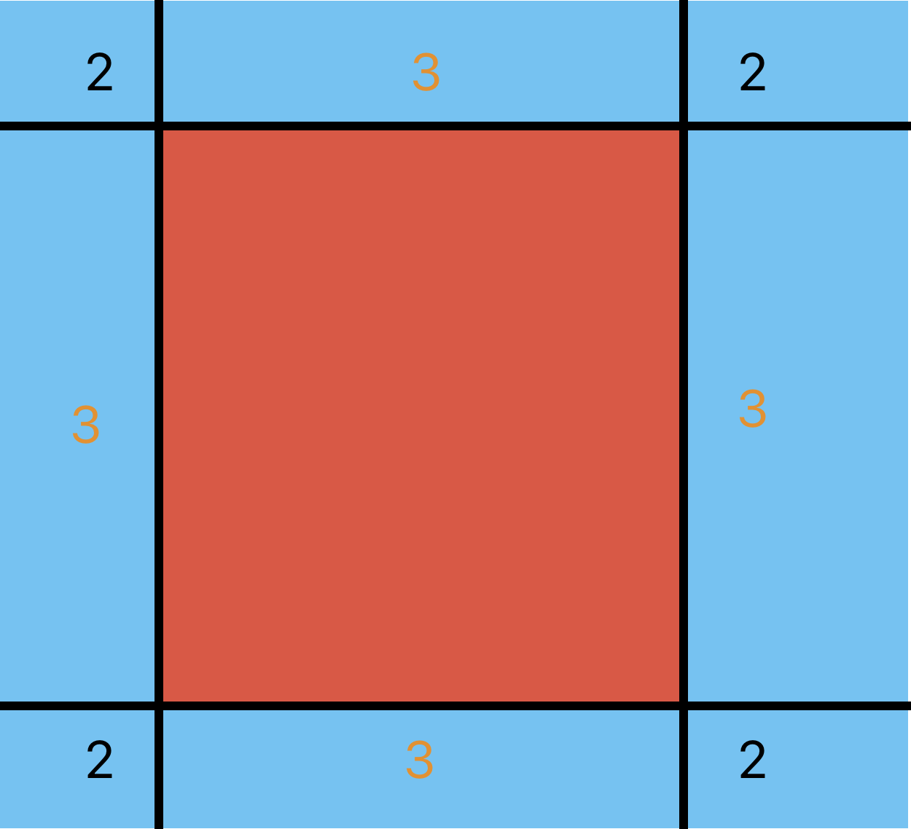
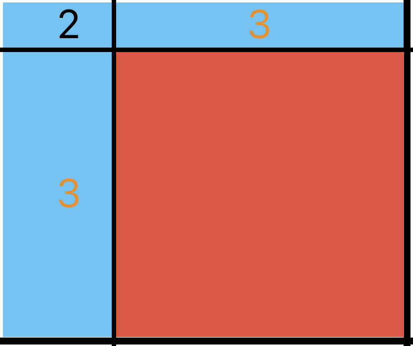
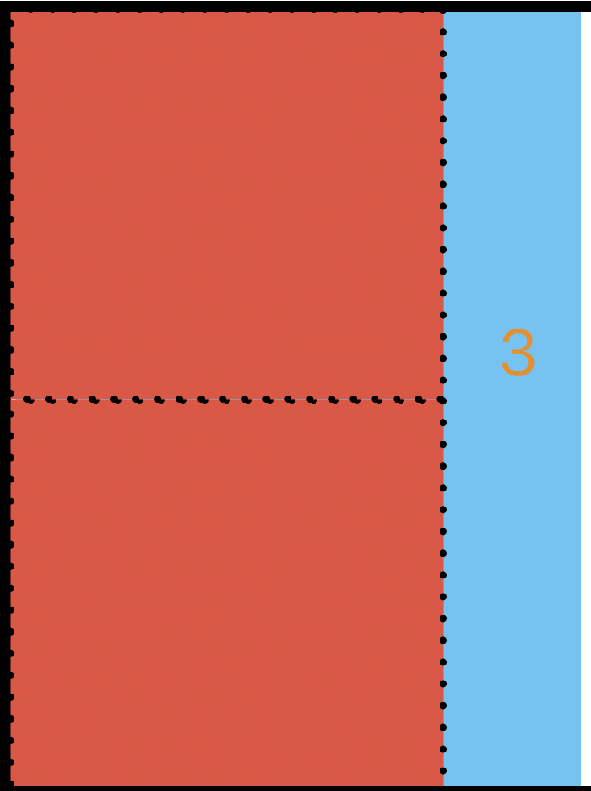

Codeforces Round 1009 (Div. 3)
原点到四个角的长度相等即可。
Show Code
1 2 3 4 5 6 7 8 9 10 11 #include <bits/stdc++.h> using namespace std;signed main () int t; cin >> t; while (t--){ int l, r, d, u; cin >> l >> r >> d >> u; cout << (l == r && r == d && d == u ? "YES" : "NO" ) << endl; } return 0 ; }
假设选中了a a a b b b a < b a<b a < b x x x [ b − a + 1 , a + b − 1 ] [b-a+1, a+b-1] [ b − a + 1 , a + b − 1 ] a > 0 a>0 a > 0 x x x x = a + b − 1 x=a+b-1 x = a + b − 1 ∑ i = 1 n a i − ( n − 1 ) \sum_{i=1}^n a_i - (n - 1) ∑ i = 1 n a i − ( n − 1 )
时间复杂度O ( n ) O(n) O ( n )
Show Code
1 2 3 4 5 6 7 8 9 10 11 12 13 14 15 #include <bits/stdc++.h> using namespace std;const int N = 2e5 + 1 ;int n, A[N], sum;signed main () int t; cin >> t; while (t--){ cin >> n; sum = 0 ; for (int i = 1 ; i <= n; ++i) cin >> A[i], sum += A[i]; sum -= n-1 ; cout << sum << endl; } return 0 ; }
由于异或运算可以看做不进位的加法，或者不退位的减法，所以只要x + y x + y x + y x − y x - y x − y x ⊕ y x\oplus y x ⊕ y x − y ≤ x ⊕ y ≤ x + y x - y\leq x\oplus y\leq x + y x − y ≤ x ⊕ y ≤ x + y x + y x+y x + y x − y x-y x − y
进位的充要条件是：存在某个x x x 1 1 1 y y y 1 1 1 x x x 0 0 0 y y y 1 1 1
所以我们只要找到最小的能使x + y x+y x + y x − y x-y x − y y y y x x x
从低到高遍历x x x 0 0 0 1 1 1 1 1 1 0 0 0
时间复杂度O ( log x ) O(\log x) O ( log x )
这个是第一个方法。我们继续观察存在y y y y ≠ 2 k y\neq 2^k y = 2 k 1 1 1 x x x y ≠ 2 k − 1 y\neq 2^k - 1 y = 2 k − 1 0 0 0 x x x x x x 1 1 1
时间复杂度依然是O ( log x ) O(\log x) O ( log x )
Show Code
1 2 3 4 5 6 7 8 9 10 11 12 13 14 15 16 17 18 19 20 21 22 23 24 25 26 27 28 29 30 31 32 33 34 35 36 37 38 39 40 41 42 43 44 #include <bits/stdc++.h> #define int unsigned using namespace std;const int N = 32 ;inline int bitcnt (int x) int cnt = 0 ; while (x){ x -= (x & -x); ++cnt; } return cnt; } inline int larger (int x) for (int i = 0 ; i < 32 ; ++i){ if (x <= (1 << i)){ return ((1 << i - 1 ) - 1 ); } } assert (true ); } signed main () int t; cin >> t; while (t--){ int x; cin >> x; if (bitcnt (x) == 1 || bitcnt (x + 1 ) == 1 ){ cout << -1 << endl; }else { cout << larger (x) << endl; } } return 0 ; }
发现m ≤ 2 e 5 m\leq 2e5 m ≤ 2 e 5 map，记录每个横坐标对应的纵坐标最大值即可。
时间复杂度O ( m log m ) O(m\log m) O ( m log m )
Show Code
1 2 3 4 5 6 7 8 9 10 11 12 13 14 15 16 17 18 19 20 21 22 23 24 25 26 27 28 29 30 31 32 33 34 35 36 37 38 #include <bits/stdc++.h> typedef long long LL;using namespace std;const int N = 2e5 + 1 ;int n, m;struct node { int x, r; } G[N]; map<int , int > mp; signed main () int t; cin >> t; while (t--){ LL ans = 0 ; cin >> n >> m; mp.clear (); for (int i = 1 ; i <= n; ++i){ cin >> G[i].x; } for (int i = 1 ; i <= n; ++i){ cin >> G[i].r; } for (int i = 1 ; i <= n; ++i){ for (int x = G[i].x - G[i].r, y = 0 ; x <= G[i].x + G[i].r; ++x){ while (LL (y + 1 ) * (y + 1 ) + LL (x - G[i].x) * (x - G[i].x) <= LL (G[i].r) * G[i].r) ++y; while (LL (y) * y + LL (x - G[i].x) * (x - G[i].x) > LL (G[i].r) * G[i].r) --y; if (mp[x] < y * 2 + 1 ){ ans += y * 2 + 1 - mp[x]; mp[x] = y * 2 + 1 ; } } } cout << ans << endl; } return 0 ; }
难得的交互题，我还以为有什么玄机。。
开局先随便问一个三角形，每次中间给一个点，那么我们就获得了三个小的三角形，每个三角形期望上都有1 / 3 1/3 1 / 3 O ( log 3 n ) O(\log_3 n) O ( log 3 n )
Show Code
1 2 3 4 5 6 7 8 9 10 11 12 13 14 15 16 17 18 19 20 21 22 23 24 25 26 27 #include <bits/stdc++.h> using namespace std;signed main () int t; cin >> t; while (t--){ srand (time (0 )); int n; cin >> n; int x = rand () % (n-2 ) + 1 ; int y = rand () % (n-x-1 ) + x + 1 ; int z = rand () % (n-y) + y + 1 ; cout << "? " << x << ' ' << y << ' ' << z << endl; cout.flush (); while (true ){ int now; cin >> now; if (now == 0 ){ cout << "! " << x << ' ' << y << ' ' << z << endl; break ; } int tag = rand () % 3 ; if (tag == 0 ) x = now; else if (tag == 1 ) y = now; else if (tag == 2 ) z = now; cout << "? " << x << ' ' << y << ' ' << z << endl; } } return 0 ; }
我们先找到最大的可以塞进去的块，发现会把矩形分成9个部分。其中中间的已经处理好了，四个角有两边是贴边的（最大块一定会贴这两个边），四个边有三边都是贴边的（若干个最大块一定会贴住这三个边排放）。

{width=50%}
对于2类块，再次取最大块最多会把它分成一个2类块和两个3类块。

{width=50%}
对于3类块，再次取最大块最多会再产生一个三类块。

{width=50%}
计算并找到最大块是O ( log n ) O(\log n) O ( log n ) O ( log 2 n ) O(\log^2 n) O ( log 2 n ) O ( log n × log 2 n ) = O ( log 3 n ) O(\log n\times \log^2 n) = O(\log^3 n) O ( log n × log 2 n ) = O ( log 3 n ) O ( log 3 n ) O(\log^3 n) O ( log 3 n ) 8000 8000 8 0 0 0
以上只是便于分析复杂度，具体实现方面，我们不需要区别某个块到底属于哪一类，直接每次分成9部分递归处理即可。寻找最大块可以采用沿x, y轴分别寻找再乘起来的方法。
Show Code
1 2 3 4 5 6 7 8 9 10 11 12 13 14 15 16 17 18 19 20 21 22 23 24 25 26 27 28 29 30 31 32 33 34 35 36 37 38 39 40 41 42 43 44 45 46 47 48 49 50 51 52 53 54 55 56 57 58 59 60 61 62 63 64 #include <bits/stdc++.h> typedef long long LL;using namespace std;const int N = 1e6 + 1 ;struct node { int l, r, len; node (int x, int y, int z){ l = x, r = y, len = z; } }; inline node find (int l, int r) int len = 0 ; for (int i = 0 ; i < 32 ; ++i){ if (r - l < (1 << i)){ len = i - 1 ; break ; } } int ll = l, rr = r; while (l % (1 << len) != 0 ) l += (l & -l); while (r % (1 << len) != 0 ) r -= (r & -r); if (r - l != (1 << len)){ --len; l = ll, r = rr; while (l % (1 << len) != 0 ) l += (l & -l); while (r % (1 << len) != 0 ) r -= (r & -r); if (r - l != (1 << len)) r -= (1 << len); } return node (l, r, len); } inline int Work (int l1, int r1, int l2, int r2) if (l1 == r1 || l2 == r2) return 0 ; if (r1 - l1 == 1 ) return r2 - l2; if (r2 - l2 == 1 ) return r1 - l1; node a = find (l1, r1), b = find (l2, r2); if (a.len > b.len){ swap (a, b); swap (l1, l2); swap (r1, r2); } int res = 1 << (b.len - a.len); res += Work (l1, a.l, l2, b.l); res += Work (l1, a.l, b.l, b.r); res += Work (l1, a.l, b.r, r2); res += Work (a.l, a.r, l2, b.l); res += Work (a.l, a.r, b.r, r2); res += Work (a.r, r1, l2, b.l); res += Work (a.r, r1, b.l, b.r); res += Work (a.r, r1, b.r, r2); return res; } signed main () int t; cin >> t; while (t--){ int l1, r1, l2, r2; cin >> l1 >> r1 >> l2 >> r2; cout << Work (l1, r1, l2, r2) << endl; } return 0 ; }
题目暗示40 0 3 400^3 4 0 0 3
首先，我们发现每次选完一个三角形相当于把环分成三个子环，对三个子环进行递归处理，我们理论上来讲就可以dfs计算出最优解，但是这样应该是会超时的（没试过记忆化搜索能不能混过去）。
为了方便，我们调整一下编号，按0 , 1 ⋯ n − 1 0, 1\cdots n - 1 0 , 1 ⋯ n − 1 n = 5 n=5 n = 5 i = 3 , j = 4 i=3,j=4 i = 3 , j = 4 3 , 4 3, 4 3 , 4 i = 4 , j = 3 i=4,j=3 i = 4 , j = 3 4 , 0 , 1 , 2 , 3 4,0,1,2,3 4 , 0 , 1 , 2 , 3
考虑区间dp。f [ i ] [ j ] [ 1 / 0 ] [ 1 / 0 ] f[i][j][1/0][1/0] f [ i ] [ j ] [ 1 / 0 ] [ 1 / 0 ] i , j i,j i , j i i i j j j max ( f [ i ] [ j ] ) \max(f[i][j]) max ( f [ i ] [ j ] ) max p , q ∈ { 0 , 1 } ( f [ i ] [ j ] [ p ] [ q ] ) \max_{p, q\in\{0, 1\}}(f[i][j][p][q]) max p , q ∈ { 0 , 1 } ( f [ i ] [ j ] [ p ] [ q ] )
这里所有关于下标的运算都认为是模意义下的运算。
考虑转移，首先显然有：
f [ i ] [ j ] [ 0 ] [ 0 ] = max ( f [ i + 1 ] [ j − 1 ] ) f [ i ] [ j ] [ 0 ] [ 1 ] = max ( f [ i + 1 ] [ j ] [ 0 ] [ 1 ] , f [ i + 1 ] [ j ] [ 1 ] [ 1 ] ) f [ i ] [ j ] [ 1 ] [ 0 ] = max ( f [ i ] [ j − 1 ] [ 1 ] [ 0 ] , f [ i ] [ j − 1 ] [ 1 ] [ 1 ] ) \begin{aligned}
f[i][j][0][0] &= \max(f[i+1][j-1])\\
f[i][j][0][1] &= \max(f[i+1][j][0][1], f[i+1][j][1][1])\\
f[i][j][1][0] &= \max(f[i][j-1][1][0], f[i][j-1][1][1])
\end{aligned}
f [ i ] [ j ] [ 0 ] [ 0 ] f [ i ] [ j ] [ 0 ] [ 1 ] f [ i ] [ j ] [ 1 ] [ 0 ] = max ( f [ i + 1 ] [ j − 1 ] ) = max ( f [ i + 1 ] [ j ] [ 0 ] [ 1 ] , f [ i + 1 ] [ j ] [ 1 ] [ 1 ] ) = max ( f [ i ] [ j − 1 ] [ 1 ] [ 0 ] , f [ i ] [ j − 1 ] [ 1 ] [ 1 ] )
对于f [ i ] [ j ] [ 1 ] [ 1 ] f[i][j][1][1] f [ i ] [ j ] [ 1 ] [ 1 ]
i , j i,j i , j i , j i,j i , j k k k
f [ i ] [ j ] [ 1 ] [ 1 ] = max k ∈ [ i + 1 , j − 1 ] { max ( f [ i + 1 ] [ k − 1 ] ) + max ( f [ k + 1 ] [ j − 1 ] ) + a i a j a k } f[i][j][1][1] = \max_{k\in [i+1, j-1]}\{\max(f[i+1][k-1])+\max(f[k+1][j-1])+a_ia_ja_k\}
f [ i ] [ j ] [ 1 ] [ 1 ] = k ∈ [ i + 1 , j − 1 ] max { max ( f [ i + 1 ] [ k − 1 ] ) + max ( f [ k + 1 ] [ j − 1 ] ) + a i a j a k }
i , j i,j i , j i i i j j j k k k
f [ i ] [ j ] [ 1 ] [ 1 ] = max k ∈ [ i + 2 , j − 3 ] { f [ i ] [ k ] [ 1 ] [ 1 ] + max ( f [ k + 1 ] [ j ] [ 0 ] [ 1 ] , f [ k + 1 ] [ j ] [ 1 ] [ 1 ] ) } f[i][j][1][1] = \max_{k\in [i+2, j-3]}\{f[i][k][1][1]+\max(f[k+1][j][0][1],f[k+1][j][1][1])\}
f [ i ] [ j ] [ 1 ] [ 1 ] = k ∈ [ i + 2 , j − 3 ] max { f [ i ] [ k ] [ 1 ] [ 1 ] + max ( f [ k + 1 ] [ j ] [ 0 ] [ 1 ] , f [ k + 1 ] [ j ] [ 1 ] [ 1 ] ) }
按j − i + 1 j-i+1 j − i + 1 3 3 3 n n n i i i k k k O ( n 3 ) O(n^3) O ( n 3 )
Show Code
1 2 3 4 5 6 7 8 9 10 11 12 13 14 15 16 17 18 19 20 21 22 23 24 25 26 27 28 29 30 31 32 33 34 35 36 37 38 39 40 41 42 43 44 45 46 47 48 49 50 51 52 53 54 55 56 57 58 59 60 61 62 63 64 65 66 67 #include <bits/stdc++.h> typedef long long LL;using namespace std;const int N = 401 ;int n, A[N];LL f[N][N][2 ][2 ]; inline int mod (int x) while (x < 0 ) x += n; while (x >= n) x -= n; return x; } inline LL g (int x, int y, int z, int t) return f[mod (x)][mod (y)][z][t]; } inline LL maxn (int x, int y) return max (max (g (x, y, 0 , 0 ), g (x, y, 1 , 0 )), max (g (x, y, 0 , 1 ), g (x, y, 1 , 1 ))); } signed main () int t; cin >> t; while (t--){ cin >> n; for (int i = 0 ; i < n; ++i){ cin >> A[i]; } for (int i = 0 ; i < n; ++i) for (int j = 0 ; j < n; ++j) for (int z = 0 ; z < 2 ; ++z) for (int t = 0 ; t < 2 ; ++t) f[i][j][z][t] = 0 ; for (int len = 3 ; len <= n; ++len){ for (int i = 0 ; i < n; ++i){ int j = mod (i + len - 1 ); f[i][j][0 ][0 ] = maxn (i + 1 , j - 1 ); f[i][j][0 ][1 ] = max (g (i + 1 , j, 1 , 1 ), g (i + 1 , j, 0 , 1 )); f[i][j][1 ][0 ] = max (g (i, j - 1 , 1 , 1 ), g (i, j - 1 , 1 , 0 )); for (int k = mod (i + 1 ); k != j; k = mod (k + 1 )){ LL res = A[i] * A[j] * A[k]; if (mod (i + 1 ) != k) res += maxn (i + 1 , k - 1 ); if (mod (k + 1 ) != j) res += maxn (k + 1 , j - 1 ); f[i][j][1 ][1 ] = max (f[i][j][1 ][1 ], res); } for (int k = mod (i + 1 ); k != j; k = mod (k + 1 )){ if (mod (k - i) < 2 ) continue ; if (mod (j - k) < 3 ) break ; LL res = g (i, k, 1 , 1 ) + max (g (k + 1 , j, 0 , 1 ), g (k + 1 , j, 1 , 1 )); f[i][j][1 ][1 ] = max (f[i][j][1 ][1 ], res); } } } LL ans = 0 ; for (int i = 0 ; i < n; ++i) ans = max (ans, maxn (i, i - 1 )); cout << ans << endl; } return 0 ; }